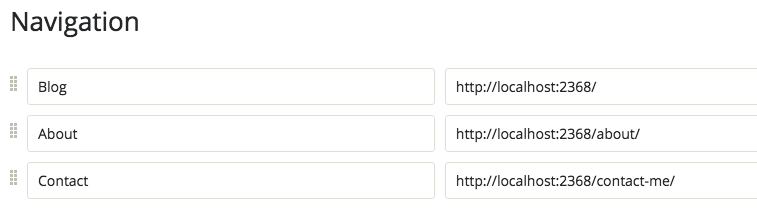
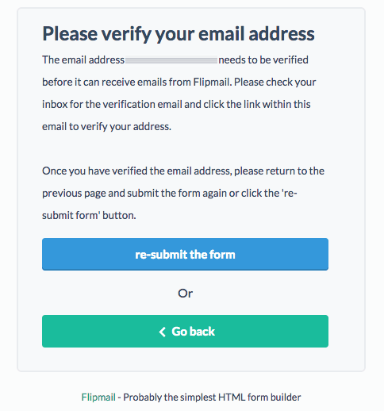

Add contact page to Ghost powered GitHub Pages with Flipmail
GitHub Pages serve only static content so in order to have a Contact page you need to use external service to process your contact form submissions. Some sources on the internet suggest to use Formspree developed and maintained by Assembly community (link on Formspree is broken so I am linking to their root).
The idea behind the project is pretty neat, you register your email with their service and than just point your action attribute in your form to their site with your email as identifier.
<form action="//formspree.io/your@email.com" method="POST">
<input type="text" name="name">
<input type="email" name="_replyto">
<input type="submit" value="Send">
</form>
They also provide some advanced features like reply-to, redirect and so on.
The only thing that bothered me with this approach is exposure of email address in source code itself.
Quick search in Google lead me to Formspree's twin brother called Flipmail. I say twin brother as two applications are almost fully the same, like the Flipmail is just a fork of Formspree with an updated engine.
Flipmail also registeres your email and the implementation is also the same, difference only difference is you are not providing your email address, but a generated key used for communication with service API.
<form action="//flipmail.co/api/fWbyj86Zy32fO9gdEWbY" method="post">
<input type="text" name="name">
<input type="email" name="email">
<textarea name="message"></textarea>
<button type="submit">Submit Form</button>
</form>
Flipmail is free service if 250 submissions per month is enough for you, otherwise you can purchase unlimited service for less than 5 bucks.
Implementing Flipmail into Ghost
The process is pretty straightforward.
- Go to http://flipmail.co/ and enter your email address then click "Get started for free!" button.
- On the right panel you will get generated HTML code, select all and copy

- Inside of your Ghost administration click on NEW POST button and set your title to "Contact"
- Paste your code from Flipmail.co into the body of your page
- Click on the
cogicon in the bottom right corner and check "Turn this post into a static page" - Publish your page
- Go to Settings > Navigation and add a new navigation item pointing it to URL of your Contact page and save
 - Generate static content with Buster
- Deploy to GitHub Pages
- Check out your newly created contact page and submit the form. With first submission you are requesting activation of the service, so head to your inbox and click activation link.

And that's it, now flavour your contact form with some validation and redirection.
I'd like to hear other implementation ideas, so feel free to comment!
Cheers.